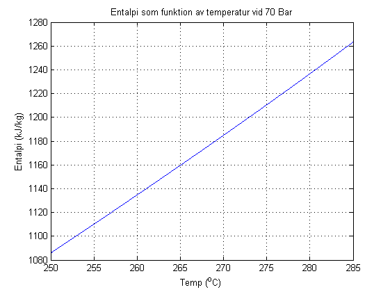

Contents
Exercise Function handles 1
Use the function h_v to plot the enthalpy as a function of temperature in the interval 250 to 286 C for 70 Bars (7e6 Pa). Note that h_v require Pascal and K as input, 0 C = 273.15 K!
p=7e6; T=250:.01:285; plot(T,h_v(T+273.15,p)); xlabel('Temp (^oC)') ylabel('Entalpi (kJ/kg)') title('Entalpi som funktion av temperatur vid 70 Bar'); grid
Write a Newton-Raphson to solve for temperature if the enthalpy is 1200 kJ/kg.
f=@(T) h_v(T,7e6)-1200; p=7e6;h=0.01; x=250+273.13; for i=1:10, f0=f(x) if abs(f0)<1e-6, break;end dfdx=(f(x+h)-f0)/h; dx=-f0/dfdx; x=x+dx; end fprintf(1,'Temperatur vid 1200 kj/kg: %6.2f \n',x-273.15);
f0 =
-114.3431
f0 =
3.5341
f0 =
0.0042
f0 =
7.6203e-008
Temperatur vid 1200 kj/kg: 272.99
Use fzero to solve for the Temperature
y=fzero(f,250+273.15)
y = 546.1355
Play around with options to explore what is going on inside:
opt=optimset(@fzero);
opt.Display='iter';
fzero(f,250+273.15,opt);
Search for an interval around 523.15 containing a sign change:
Func-count a f(a) b f(b) Procedure
1 523.15 -114.247 523.15 -114.247 initial interval
3 508.353 -184.591 537.947 -41.5405 search
5 502.224 -213.174 544.076 -10.5494 search
7 493.556 -253.127 552.744 34.37 search
Search for a zero in the interval [493.556, 552.744]:
Func-count x f(x) Procedure
7 552.744 34.37 initial
8 545.668 -2.40096 interpolation
9 546.13 -0.0280827 interpolation
10 546.135 -7.25793e-007 interpolation
11 546.135 -2.68301e-011 interpolation
12 546.135 -2.68301e-011 interpolation
13 546.135 3.58796e-010 interpolation
14 546.135 3.57886e-010 interpolation
15 546.135 -1.53477e-010 bisection
16 546.135 3.57886e-010 interpolation
17 546.135 -4.08136e-010 interpolation
18 546.135 -4.08136e-010 interpolation
Zero found in the interval [493.556, 552.744]